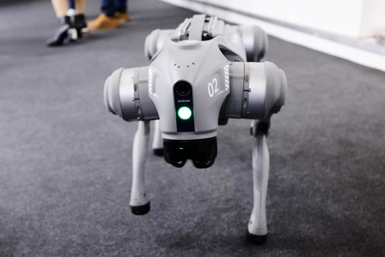

智能導航與自動避障
1.搭載 LiDAR、超聲波或立體相機進行即時地圖建構與路徑規劃
2.自動避開障礙物與移動目標，適應複雜地形
3.室內外定位（SLAM）功能，能在無 GPS 的環境下運行
1.搭載 LiDAR、超聲波或立體相機進行即時地圖建構與路徑規劃
2.自動避開障礙物與移動目標，適應複雜地形
3.室內外定位（SLAM）功能，能在無 GPS 的環境下運行

1.攝影與錄影：配備4K相機與夜視功能，可用於巡邏或記錄日常
2.安全巡邏：偵測異常聲音或動作，自動警報
3.搭載小型貨物：可進行物品搬運（如遞送包裹）
4.教育用途：可編程、支援STEAM課程應用
Go2配備了Unitree特製的4D光學雷達L1，具有360°x90°的半球形超廣角感知能力，最小探測距離低至0.05米，能夠實現全地形感知。
結合AI和機器人技術，Go2可以通過GPT大模型的語言能力和知識庫理解主人的意圖，並結合感測器信息更好地理解世界和做出決策。
Go2的關節性能提升30%，最大扭矩可達45N.m，支撐機器人完成更複雜的動作。標配8000mAh電池，並提供15000mAh長續航版電池，確保超長時間運行。
Go2採用了運動控制技術，具有更強的平衡性，能夠適應各類不同地形，並支持多種動作姿態，如上下樓梯、跳躍、倒立、握手、空翻等。
Go2具有實時串流圖傳和光達高度圖顯示功能，幫助用戶隨時隨地查看周圍環境。App還支持顯示各傳感器數據，掌握機器人運行狀態。
Go2可搭載伺服機機械手臂，完成抓取、搬運等動作。還可使用導航光達和充電樁來實現看家護院、自主設定巡檢路線的功能。